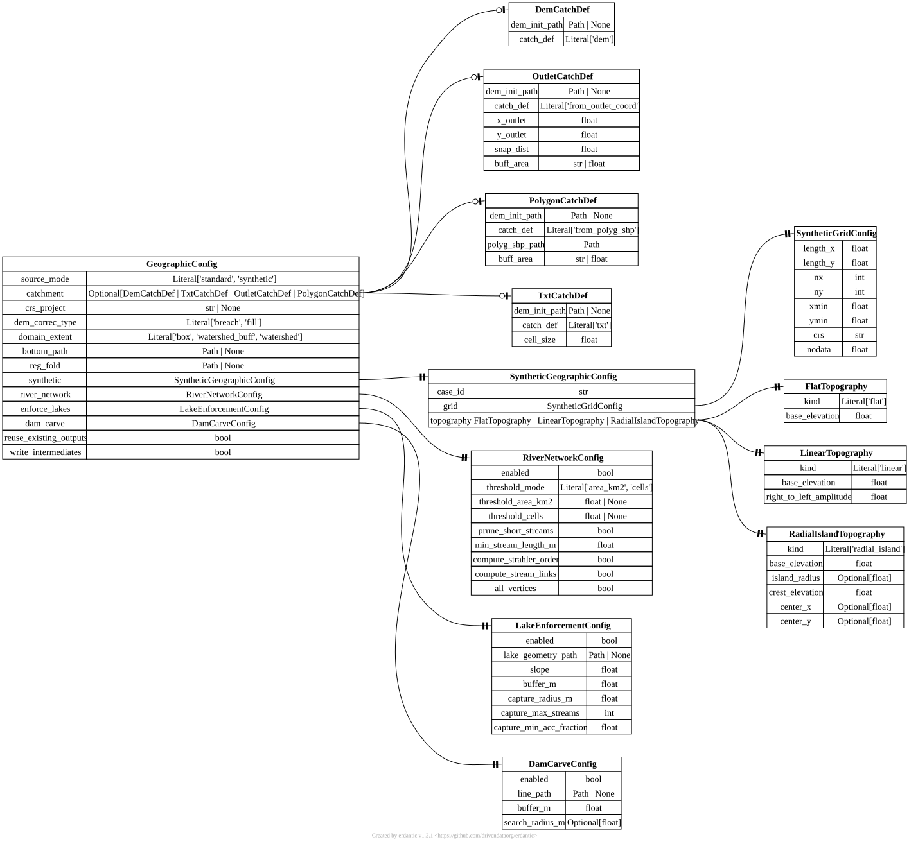

[geographic] GeographicConfig#
TOML section: [geographic]
Pydantic model: GeographicConfig defined in hydromodpy.spatial.geographic.geographic_config.
Geographic configuration for watershed delineation.
This model stores parameters used to extract and prepare the physical domain (watershed geometry and rasters) based on various possible input definitions.
Standard mode uses an external DEM with one of the catchment definitions: direct DEM, XYZ text grid, outlet coordinate, or polygon shapefile. Synthetic mode builds an analytical support and bypasses external DEM delineation.
Fields#
source_mode
Literal[‘standard’, ‘synthetic’] default = “standard” user source
Geographic runtime mode. ‘standard’ keeps the historical DEM/outlet/polygon workflow. ‘synthetic’ builds one analytical support from [geographic.synthetic].
catchment
in TOML:
[geographic.catchment]
catch_def = “dem” | “txt” | “from_outlet_coord” | “from_polyg_shp” default = None user source
Catchment definition payload used when source_mode=’standard’. Discriminated by ‘catch_def’ on the nested table: ‘dem’ | ‘txt’ | ‘from_outlet_coord’ | ‘from_polyg_shp’.
Pick a tab below: setting
catch_defselects the matching schema.
TOML: [geographic.catchment.dem] – model DemCatchDef (set catch_def = "dem").
dem_init_path
Path | None default = None user source
Path to the DEM raster used as input. For ‘dem’ and ‘txt’ modes: defines the model domain directly. For ‘from_outlet_coord’ and ‘from_polyg_shp’ modes: regional DEM used for flow analysis. May be left absent when [data.dem.sources] declares the DEM.
TOML: [geographic.catchment.txt] – model TxtCatchDef (set catch_def = "txt").
dem_init_path
Path | None default = None user source
Path to the DEM raster used as input. For ‘dem’ and ‘txt’ modes: defines the model domain directly. For ‘from_outlet_coord’ and ‘from_polyg_shp’ modes: regional DEM used for flow analysis. May be left absent when [data.dem.sources] declares the DEM.
cell_size
float required user source
Grid cell size in metres used to rasterise the XYZ point cloud. Accepts inline units (e.g. ‘25 m’, ‘0.025 km’).
TOML: [geographic.catchment.from_outlet_coord] – model OutletCatchDef (set catch_def = "from_outlet_coord").
dem_init_path
Path | None default = None user source
Path to the DEM raster used as input. For ‘dem’ and ‘txt’ modes: defines the model domain directly. For ‘from_outlet_coord’ and ‘from_polyg_shp’ modes: regional DEM used for flow analysis. May be left absent when [data.dem.sources] declares the DEM.
snap_dist
float required user source
Maximum snapping distance (metres) to move the outlet to the nearest stream cell. Accepts inline units (e.g. 50, ‘50 m’, ‘0.05 km’).
buff_area
str | float required user source
Buffer around the watershed polygon. Numeric values are interpreted as a percentage of sqrt(area [km^2]). String values are interpreted as explicit distances (for example ‘500 m’, ‘2 km’).
TOML: [geographic.catchment.from_polyg_shp] – model PolygonCatchDef (set catch_def = "from_polyg_shp").
dem_init_path
Path | None default = None user source
Path to the DEM raster used as input. For ‘dem’ and ‘txt’ modes: defines the model domain directly. For ‘from_outlet_coord’ and ‘from_polyg_shp’ modes: regional DEM used for flow analysis. May be left absent when [data.dem.sources] declares the DEM.
buff_area
str | float required user source
Buffer around the watershed polygon. Numeric values are interpreted as a percentage of sqrt(area [km^2]). String values are interpreted as explicit distances (for example ‘500 m’, ‘2 km’).
crs_project
str | None default = None user source
Target projected CRS for all outputs (e.g. ‘EPSG:2154’). If not set, derived from the input DEM.
dem_correc_type
Literal[‘breach’, ‘fill’] default = “breach” user source
DEM depression correction method. ‘breach’ (recommended) preserves natural flow paths. ‘fill’ raises sinks to their pour point.
domain_extent
Literal[‘box’, ‘watershed_buff’, ‘watershed’] default = “box” user source
Selects the DEM surface used for the domain. ‘box’ (default) keeps the full buffered rectangular support. ‘watershed’ / ‘watershed_buff’ select the catchment (optionally with a buffer ring) surface. Note: the MODFLOW 6 mesh still covers the buffered box (the buffer stays active for inter-basin exchange); out-of-watershed drainage is kept out of the catchment discharge by the DRN watershed-routing, not by an idomain mask. Experimental.
bottom_path
Path | None default = None user source
Path to a raster representing the aquifer bottom elevation. Must share the same grid as the model domain.
reg_fold
Path | None default = None dev source
Folder with pre-computed regional flow rasters. When set, rasters are loaded instead of recomputed.
synthetic
in TOML:
[geographic.synthetic]
SyntheticGeographicConfig factory user source
Synthetic geographic support used when source_mode=’synthetic’. This analytical mode bypasses watershed delineation from external DEM files.
river_network
in TOML:
[geographic.river_network]
RiverNetworkConfig factory user source
Optional DEM-derived river-network extraction settings. When disabled, no stream network is generated in geographic preprocessing.
enforce_lakes
in TOML:
[geographic.enforce_lakes]
LakeEnforcementConfig factory user source
Optional lake hydro-enforcement of the routing DEM: carve the lake footprints so streams route into the lakes and drain to the outlet, without touching the model grid top.
dam_carve
in TOML:
[geographic.dam_carve]
DamCarveConfig factory user source
Optional dam structure-carve of the model-top DEM: lower the dam footprint to the valley floor so a cutoff wall sits at the dam on a raw DEM (mirror of enforce_lakes, on the top instead of the routing DEM).
reuse_existing_outputs
bool default = False user source
If true, reuse previously generated geographic artifacts when the cached fingerprint matches the current DEM, outlet/polygon and geographic settings. This is useful for profiling repeated simulation runs in the same workspace.
write_intermediates
bool default = False dev source
Keep intermediate rasters and shapefiles on disk after geographic preprocessing. When false (default), .hmp/scratch/_preprocessing/ is removed after ingestion into the run field store.
Starter TOML snippet#
Cases using this section#
Validation gallery cases that reference fields from this section:
Entity-relationship diagram#
{kind=link}

Click to zoom and pan. Press Esc or click outside to close.